Vision Based Navigation
Computer Vision Group - TUM
Practical Course: Vision Based Navigation
Lecture 2: Camera Models and Optimization
Mateo de Mayo, Jason Chui, Jonathan Eichhorn
Prof. Dr. Daniel Cremers

Version: 01.04.2026
Camera Models
Image Formation 1/3
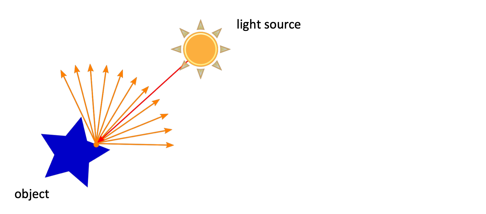
Image Formation 2/3
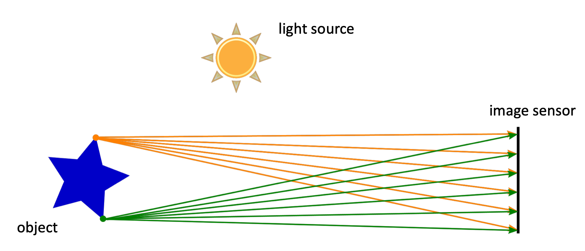
Image Formation 3/3
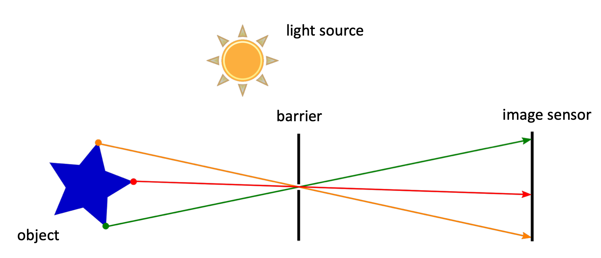
Camera Obscura
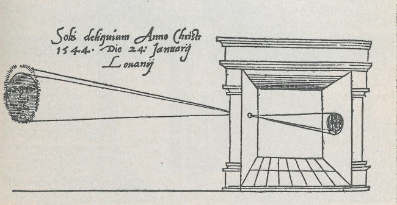
Pinhole Camera Model
- Camera coordinate frame attached to the center of (0,0) pixel.
- X - horizontal axis
- Y - vertical axis downwards
- Z - forward
Intrinsic parameters:
\[\textbf{i} = [f_x, f_y, c_x, c_y]^T\]
Projection:
\[\pi(\textbf{x}, \textbf{i}) = \begin{bmatrix} f_x \frac{x}{z} \\ f_y \frac{y}{z} \end{bmatrix} + \begin{bmatrix} c_x \\ c_y \end{bmatrix}\]
Unprojection:
\[ \begin{aligned} \pi^{-1}(\textbf{u}, \textbf{i}) &= \frac{1}{\sqrt{m_x^2 + m_y^2 + 1}} \begin{bmatrix} m_x \\ m_y \\ 1 \end{bmatrix} \\ m_x &= \frac{u - c_x}{f_x} \quad m_y = \frac{v - c_y}{f_y} \end{aligned} \]
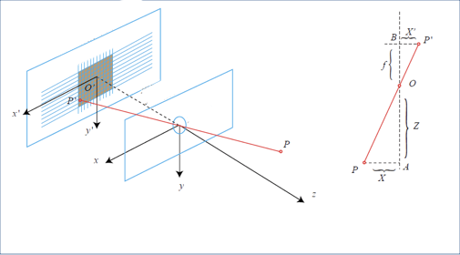
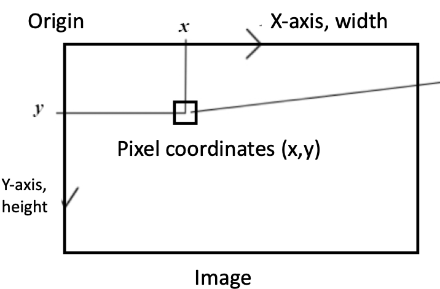
Distortion Models
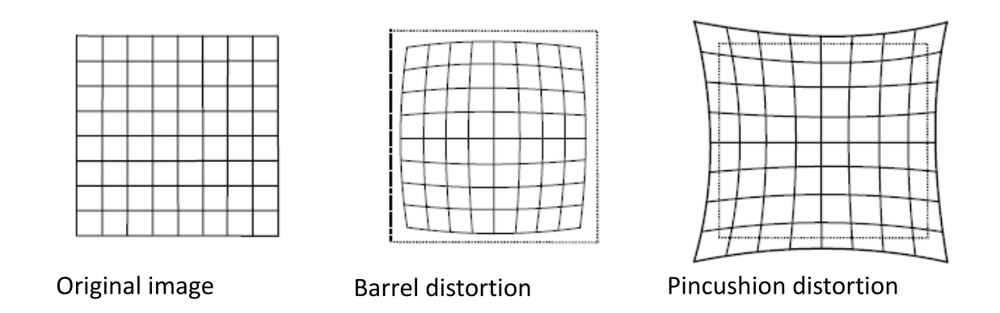
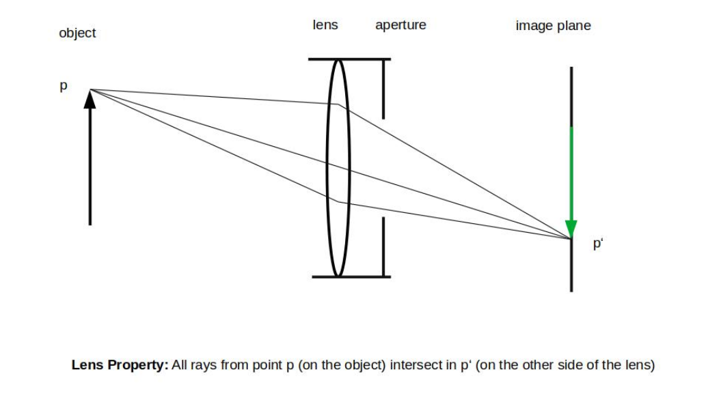
Useful Link: https://web.stanford.edu/class/cs231a/course_notes/01-camera-models.pdf
Large FOV and Navigation
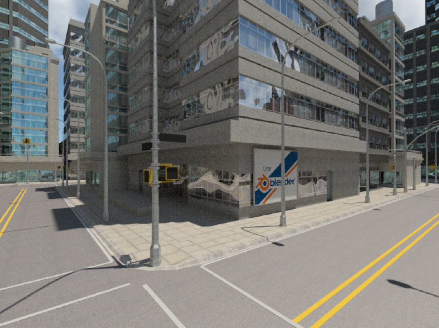
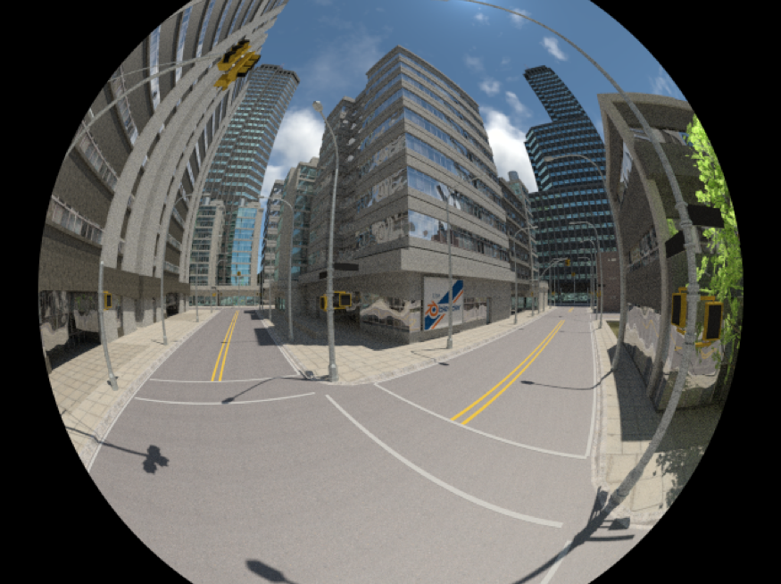
Z. Zhang, H. Rebecq, C. Forster, D. Scaramuzza “Benefit of Large Field-of-View Cameras for Visual Odometry” IEEE International Conference on Robotics and Automation (ICRA), Stockholm, 2016.
Distortion
- Pinhole
- Fast projection and unprojection
- Not sutiable for > 180 deg
- Bad numeric properties > 120 deg
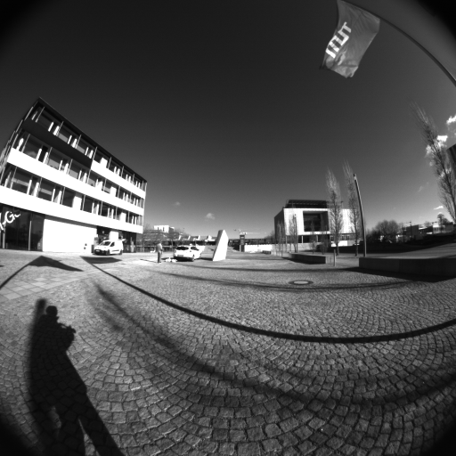
- More complex model
- Working with “raw” image
- No issues with large FOV
- Possible to optimize intrinsics online
(Extended) Unified Camera Model
Intrinsic parameters:
\[\textbf{i} = [f_x, f_y, c_x, c_y, \alpha, \beta]^T\]
Projection:
\[\pi(\textbf{x}, \textbf{i}) = \begin{bmatrix} f_x \frac{x}{\alpha d + (1-\alpha)z} \\ f_y \frac{y}{\alpha d + (1-\alpha)z} \end{bmatrix} + \begin{bmatrix} c_x \\ c_y \end{bmatrix}\]
\[d = \sqrt{\beta(x^2 + y^2) + z^2}\]
Unprojection:
\[ \begin{aligned} \pi^{-1}(\textbf{u}, \textbf{i}) &= \frac{1}{\sqrt{m_x^2 + m_y^2 + m_z^2}} \begin{bmatrix} m_x \\ m_y \\ m_z \end{bmatrix} \\ m_x &= \frac{u - c_x}{f_x} \quad m_y = \frac{v - c_y}{f_y} \\ r^2 &= m_x^2 + m_y^2 \\ m_z &= \frac{1 - \beta \alpha^2 r^2}{\alpha \sqrt{1 - (2\alpha - 1)\beta r^2} + (1-\alpha)} \end{aligned} \]
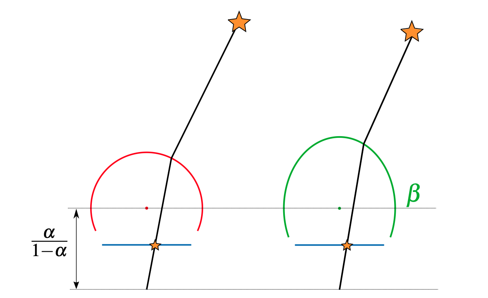
Kannala-Brandt Camera Model
Intrinsic parameters:
\[\textbf{i} = [f_x, f_y, c_x, c_y, k_1, k_2, k_3, k_4]^T\]
Projection:
\[ \begin{aligned} \pi(\textbf{x}, \textbf{i}) &= \begin{bmatrix} f_x d(\theta) \frac{x}{r} \\ f_y d(\theta) \frac{y}{r} \end{bmatrix} + \begin{bmatrix} c_x \\ c_y \end{bmatrix}\\ r &= \sqrt{x^2 + y^2} \\ \theta &= atan2(r, z) \\ d(\theta) &= \theta + k_1 \theta^3 + k_2 \theta^5 + k_3 \theta^7 + k_4 \theta^9 \end{aligned} \]
Unprojection:
\[ \begin{aligned} \pi^{-1}(\textbf{u}, \textbf{i}) &= \begin{bmatrix} sin(\theta^*) \frac{m_x}{r_u} \\ sin(\theta^*) \frac{m_y}{r_u} \\ cos(\theta^*) \end{bmatrix} \quad m_x = \frac{u - c_x}{f_x} \quad m_y = \frac{v - c_y}{f_y} \\ r_u &= \sqrt{m_x^2 + m_y^2} \\ \theta^* &= d^{-1}(r_u) \text{ (find root of the polynomial)} \end{aligned} \]
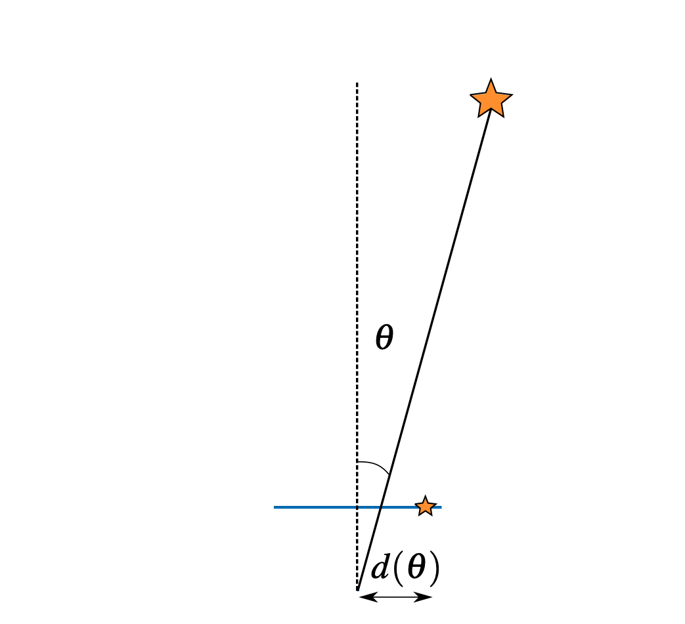
Double Sphere Camera Model
Intrinsic parameters:
\[\textbf{i} = [f_x, f_y, c_x, c_y, \xi, \alpha]^T\]
Projection:
\[ \begin{aligned} \pi(\textbf{x}, \textbf{i}) &= \begin{bmatrix} f_x \frac{x}{\alpha d_2 + (1-\alpha)(\xi d_1 + z)} \\ f_y \frac{y}{\alpha d_2 + (1-\alpha)(\xi d_1 + z)} \end{bmatrix} + \begin{bmatrix} c_x \\ c_y \end{bmatrix}\\ d_1 &= \sqrt{x^2 + y^2 + z^2} \\ d_2 &= \sqrt{x^2 + y^2 + (\xi d_1 + z)^2} \end{aligned} \]
Unprojection:
\[ \begin{aligned} \pi^{-1}(\textbf{u}, \textbf{i}) &= \frac{m_z \xi + \sqrt{m_z^2 + (1-\xi^2)r^2}}{m_z^2 + r^2} \begin{bmatrix} m_x \\ m_y \\ m_z \end{bmatrix} - \begin{bmatrix} 0 \\ 0 \\ \xi \end{bmatrix} \quad m_x = \frac{u - c_x}{f_x} \quad m_y = \frac{v - c_y}{f_y} \\ r^2 &= m_x^2 + m_y^2 \\ m_z &= \frac{1 - \alpha^2 r^2}{\alpha \sqrt{1 - (2\alpha - 1)r^2} + (1-\alpha)} \end{aligned} \]
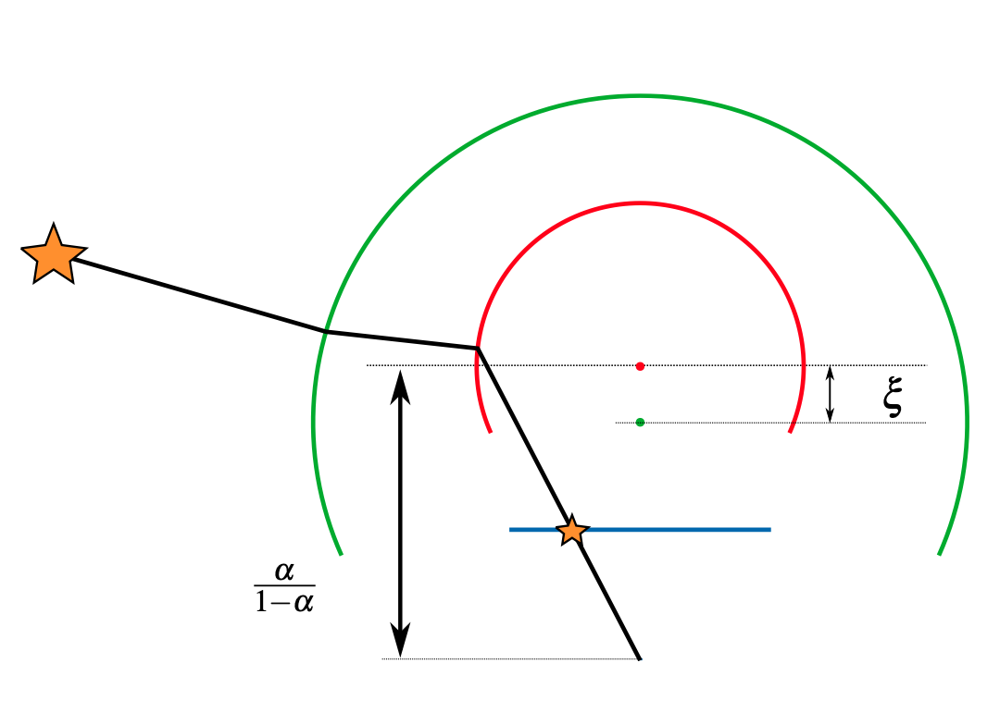
Camera Models Code
template <typename Scalar>
class PinholeCamera : public AbstractCamera<Scalar> {
public:
…
typedef Eigen::Matrix<Scalar, 2, 1> Vec2;
typedef Eigen::Matrix<Scalar, 3, 1> Vec3;
typedef Eigen::Matrix<Scalar, N, 1> VecN;
PinholeCamera() { param.setZero(); }
PinholeCamera(const VecN& p) { param = p; }
…
virtual Vec2 project(const Vec3& p) const {
const Scalar& fx = param[0];
const Scalar& fy = param[1];
const Scalar& cx = param[2];
const Scalar& cy = param[3];
const Scalar& x = p[0];
const Scalar& y = p[1];
const Scalar& z = p[2];
Vec2 res = ...; // TODO SHEET 2: implement camera model
return res;
}
virtual Vec3 unproject(const Vec2& p) const {
const Scalar& fx = param[0];
const Scalar& fy = param[1];
const Scalar& cx = param[2];
const Scalar& cy = param[3];
Vec3 res = ...; // TODO SHEET 2: implement camera model
return res;
}
…
EIGEN_MAKE_ALIGNED_OPERATOR_NEW
private:
VecN param;
};- Avoid using
std::pow()function to maintain the precision. For example, if you need to compute \(x^2\) use multiplication:x * x. - If your compiler complains about
Jettypes try changing the constants in projection and unprojection functions toScalar(<constant>). For example,Scalar(1)instead of1. - You can use Newton’s method for finding roots to compute a root of the polynomial given a good initialization. Usually 3-5 iterations should be enough for the optimization to converge.
- You can use Horner’s method to efficiently compute polynomials.
Optimization
Maximum a Posteriori Estimation
Given a set of parameters \(x = \{x_1, \ldots, x_n\}\) and a set of observations that depend on the parameters \(z = \{z_1, \ldots, z_m\}\) we want estimate the value of \(x\) that is most likely to result in these observations:
\[x^* = \arg \max_x P(x|z)\]
This estimate of the parameters \(x^*\) is called the Maximum a posteriori (MAP) estimation.
We can rewrite the probability using the Bayes’ Rule:
\[P(x|z) = \frac{P(z|x)P(x)}{P(z)}\]
i.e., posteriori = likelihood * prior / evidence
We can drop the denominator, because it does not depend on \(x\).
\[x^* = \arg \max_x P(z|x)P(x)\]
i.e., “Which state it is most likely to produce such measurements?”
From MAP to Least Squares 1/4
From MAP to least squares problem
If we assume that the measurements are independent the joint PDF can be factorized:
\[P(z|x) = \prod_{k=1}^m P(z_k|x)\]
Let’s consider a single observation: \(z_k = h(x) + v_k\)
- Affected by Gaussian noise: \(v_k \sim \mathcal{N}(0, Q_k)\)
The observation model gives us a conditional PDF:
\[P(z_k|x) = \mathcal{N(h(x), Q_k)}\]
How do we estimate \(x\)?
From MAP to Least Squares 2/4
- Gaussian Distribution (matrix form)
\[P(x) = \frac{1}{(2\pi)^{p/2} |\Sigma|^{1/2}} \exp\left(-\frac{1}{2}(x-\mu)^T \Sigma^{-1} (x-\mu)\right)\]
- Take negative logarithm from both sides:
\[-\ln P(x) = \frac{1}{2}\ln((2\pi)^p |\Sigma|) + \frac{1}{2}(x-\mu)^T \Sigma^{-1} (x-\mu)\]
- Maximum of \(P(x)\) is equivalent to the minimum of \(-\ln P(x)\).
From MAP to Least Squares 3/4
Batch least squares
Formulate residual function:
\[r_k = z_k - h(x)\]
- Maximizing of \(P(x)\) is equivalent to minimizing the sum of squared residuals:
\[E(x) = \frac{1}{2} \sum_k{} r_k^T Q r_k\]
From MAP to Least Squares 4/4
- Some notes:
- Because of noise, when we take the estimated trajectory and map into the models, they won’t fit perfectly
- Then we adjust our estimation to get a better estimation (minimize the error)
- The error distribution is affected by noise distribution (information matrix)
- Structure of the least square problem
- Sum of many squared errors
- The dimension of total state variable may be high
- But single error item is easy (only related to two states in our case)
- If we use Lie group and Lie algebra, then it’s a non-constrained least square
\[E(x) = \frac{1}{2} \sum_k{} r_k^T Q r_k\]
Least Squares 1/2
How to solve a least square problem?
- Non-linear, discrete time, non-constrained
Let’s start from a simple example
- Consider minimizing a squared error:
\[E(x) = \frac{1}{2} \sum_k{r_k(x)^T r_k(x)} = \frac{1}{2} r(x)^T r(x)\]
- When \(E(x)\) is simple, just solve:
\[\frac{\partial E(x)}{\partial x} = 0\]
And we will find the maxima/minima/saddle points
Least Squares 2/2
When \(E(x)\) is a complicated function:
\(\frac{\partial E(x)}{\partial x} = 0\) is hard to solve
We use iterative methods
Iterative methods
Start from an initial estimate \(x_0\)
At iteration \(n\), we find an increment \(\Delta x_n\) that minimizes \(E(x_n + \Delta x_n)\).
If the change in error function is small enough, stop (converged).
If not, set \(x_{n+1} = x_n + \Delta x_n\) and iterate to step 2.
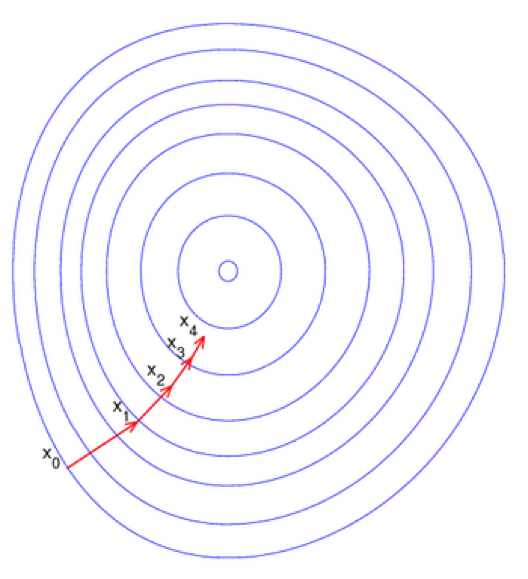
Gradient Descent
How to find the increment?
First order methods - Gradient Descent
Taylor expansion of the objective function
\(E(x + \Delta x) = E(x) + G(x) \Delta x\)
The update step:
\[\boxed{\Delta x = - \alpha G(x)}\]
Gradient Descent Performance
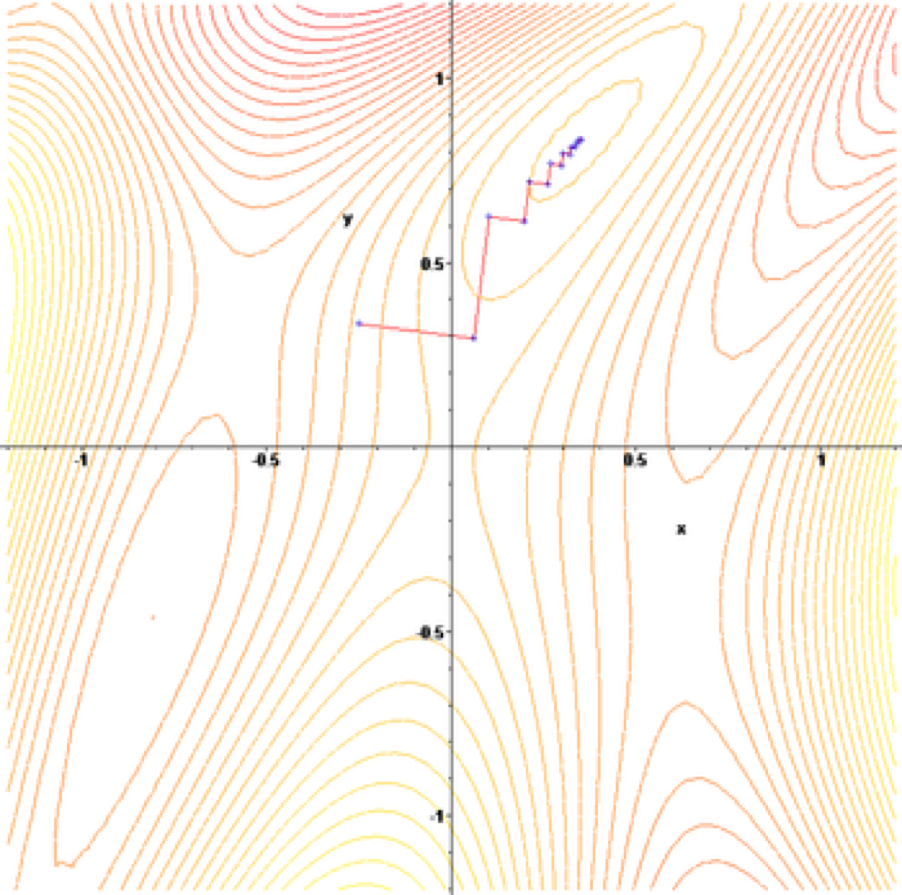
Other shortcomings:
Slow convergence speed
Even slower when close to minimum
Second Order Methods 1/2
Second order methods
- Taylor expansion of the objective function \[E(x + \Delta x) = E(x) + G(x) \Delta x + \frac{1}{2} \Delta x^T H(x) \Delta x\]
- Setting \[\frac{\partial E(x + \Delta x)}{\partial \Delta x} = 0\]
- We get the update step: \[H(x) \Delta x = - G(x) \Rightarrow \boxed{\Delta x = - H^{-1}(x) G(x)}\]
This is called Newton’s method.
Second Order Methods 2/2
Second order method converges more quickly than first order methods
But the Hessian matrix may be hard to compute
Can we avoid the Hessian matrix and also keep second order’s convergence speed?
Gauss-Newton
Levenberg-Marquardt
Gauss-Newton Method 1/2
Gauss-Newton
Taylor expansion of \(r(x)\): \(r(x + \Delta x) \simeq r(x) + J(x) \Delta x\)
Then the squared error becomes:
\[ \begin{aligned} E(x + \Delta x) &= \frac{1}{2} r(x)^T r(x) + \Delta x^T J(x)^T r(x) + \frac{1}{2} \Delta x^T J(x)^T J(x) \Delta x \\ &= F(x) + \Delta x^T J(x)^T r(x) + \frac{1}{2} \Delta x^T J(x)^T J(x) \Delta x \end{aligned} \]
If we set \(\frac{\partial E(x + \Delta x)}{\partial \Delta x} = 0\), we get:
\[ \begin{aligned} J(x)^T J(x) \Delta x &= - J(x)^T r(x) \\ \Rightarrow \Delta x &= - (J(x)^T J(x))^{-1} J(x)^T r(x) \\ &\simeq -H(x)^{-1} G(x) \quad \text{(from Newton's method)} \end{aligned} \]
Gauss-Newton Method 2/2
Gauss-Newton uses \(J(x)^T J(x)\) as an approximation of the Hessian
- Avoids the computation of \(H(x)\) in the Newton’s method
But \(J(x)^T J(x)\) is only semi-positive definite
\(H(x)\) may be singular when \(J(x)^T J(x)\) has a non-empty null space
Levenberg-Marquardt Method 1/2
- Trust region approach: approximation is only valid in a region
- Evaluate if the approximation is good: \[\rho = \frac{r(x + \Delta x) - r(x)}{J(x) \Delta
x}\] i.e.
real descent / approximated descent - If \(\rho\) is large, increase the region
- If \(\rho\) is small, decrease the region
Then
LM optimization: \[E(x + \Delta x) = \frac{1}{2} r(x + \Delta x)^T r(x + \Delta x) + \lambda |\Delta x|^2\]
- Assume the approximation is only good within a region
- \(\lambda\) controls the region based on \(\rho\)
Levenberg-Marquardt Method 2/2
Trust region problem: \[E(x + \Delta x) = \frac{1}{2} r(x + \Delta x)^T r(x + \Delta x) + \lambda \| \Delta x \|^2\]
Expand it just like in GN case, the incremental is: \[\Delta x = - (J(x)^T J(x) + \lambda I)^{-1} J(x)^T r(x)\]
The \(\lambda I\) part makes sure that Hessian is positive definite.
When \(\lambda \to 0\), LM becomes GN.
When \(\lambda \to \infty\), LM becomes gradient descent.
Other Methods
Other methods include:
- Dog-leg method
- Conjugate gradient method
- Quasi-Newton’s method
- Pseudo-Newton’s method
- …
You can find more in optimization books if you are interested
In SLAM/SfM/VO, Gauss-Netwton and Levenberg-Marquardt are used to solve camera motion, optical-flow, etc.
More details:
Triggs B, McLauchlan PF, Hartley RI, Fitzgibbon AW. Bundle adjustment—a modern synthesis. InInternational workshop on vision algorithms 1999 Sep 20 (pp. 298-372). Springer, Berlin, Heidelberg.
Ceres
We will use Ceres for least-squares optimization.
Tutorial: http://ceres-solver.org/tutorial.html
Curve fitting example: \(y = \exp(mx + c)\)
Observations: a set of \((x, y)\) pairs
Parameters to estimate: \(m, c\).
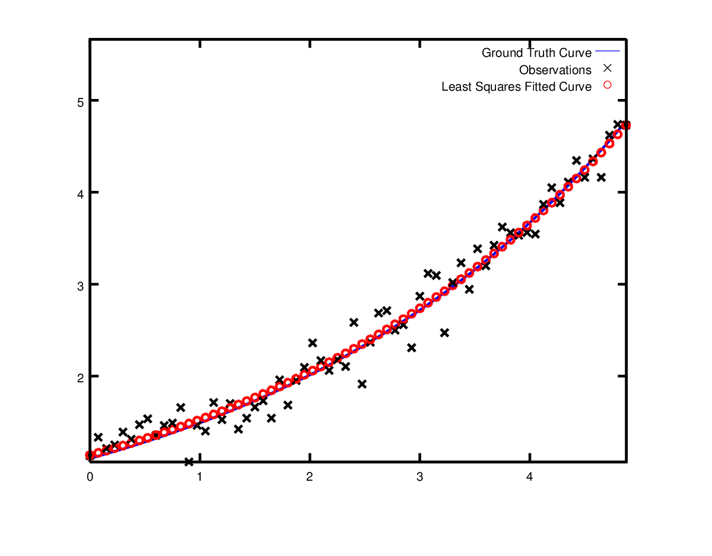
Ceres 1/3
- Define your residual class as a functor (overload the
operator())
struct ExponentialResidual {
ExponentialResidual(double x, double y)
: x_(x), y_(y) {}
template <typename T>
bool operator()(const T* const m, const T* const c, T* residual) const {
residual[0] = T(y_) - exp(m[0] * T(x_) + c[0]);
return true;
}
private:
// Observations for a sample.
const double x_;
const double y_;
};Ceres 2/3
Build the optimization problem
With auto-diff, Ceres will compute the Jacobians for you
Ceres 3/3
Finally solve it by calling the Solve() function and get the result summary
You can set some parameters like number of iterations, stop conditions or the linear solver type.
Least-Squares Summary
In the maximum a posteriori estimation we estimate all the state variable given using a set of noisy measurements.
The MAP estimation problem with Gaussian noise can be reformulated into a least square problem
It can be solved by iterative methods: Gradient Descent, Newton’s method, Gauss-Newton or Levernberg-Marquardt.
Exercise 2 - Setup
- We want to estimate
- Poses of the camera setup with respect to pattern
- Intrinsic parameters of both cameras
- Extrinsic parameters (rigid body transformation from one camera to the other)
- Minimizing the projection residuals: \[r
= u_j - \pi(R_{cw}p_w^j + t_{cw}, \mathbf{i})\]
- \(u_j\): detection of the corner \(j\) in the image.
- \(p_w^j\): 3D coordinates in the world (pattern) coordinate frame
- \(\mathbf{i}\): intrinsic parameter of the camera
- \(R_{wc}, t_{wc}\): rigid body transformation from the world (pattern) coordinate frame to the camera coordinate frame.
- \(\pi(\cdot)\): is the projection function
- Corner points are detected using Apriltags:
E. Olson. AprilTag: A robust and flexible visual fiducial system. In Proceedings of the IEEE International Conference on Robotics and Automation (ICRA), pages 3400–3407. IEEE, May 2011.
Exercise 2 - Residual
struct ReprojectionCostFunctor {
EIGEN_MAKE_ALIGNED_OPERATOR_NEW
ReprojectionCostFunctor(const Eigen::Vector2d& p_2d,
const Eigen::Vector3d& p_3d,
const std::string& cam_model)
: p_2d(p_2d), p_3d(p_3d), cam_model(cam_model) {}
template <class T>
bool operator()(T const* const sT_w_i, T const* const sT_i_c,
T const* const sIntr, T* sResiduals) const {
Eigen::Map<Sophus::SE3<T> const> const T_w_i(sT_w_i);
Eigen::Map<Sophus::SE3<T> const> const T_i_c(sT_i_c);
Eigen::Map<Eigen::Matrix<T, 2, 1>> residuals(sResiduals);
const std::shared_ptr<AbstractCamera<T>> cam =
AbstractCamera<T>::from_data(cam_model, sIntr);
// TODO SHEET 2: implement the rest of the functor
return true;
}
Eigen::Vector2d p_2d;
Eigen::Vector3d p_3d;
std::string cam_model;
};Exercise 2 - Before Optimization
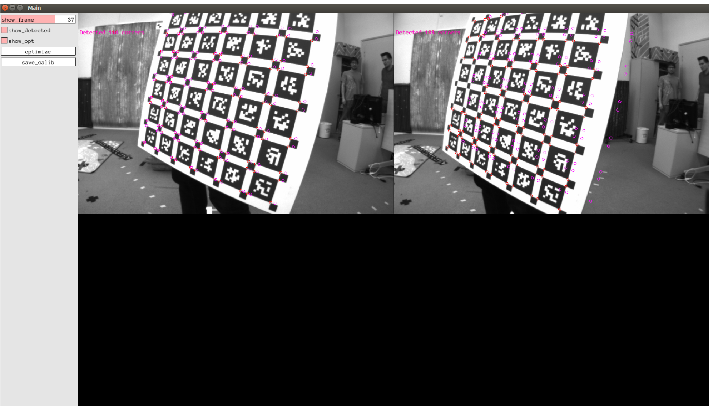
Exercise 2 - After Optimization
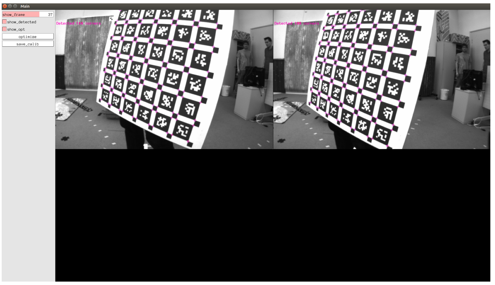
Exercise 2 - Final notes
Use camera models presented here to get initial projections
Implement the projection function
Implement the residual.
Set up optimization problem. Use local parametrization where necessary.
Test different models. How well do they fit the lens?